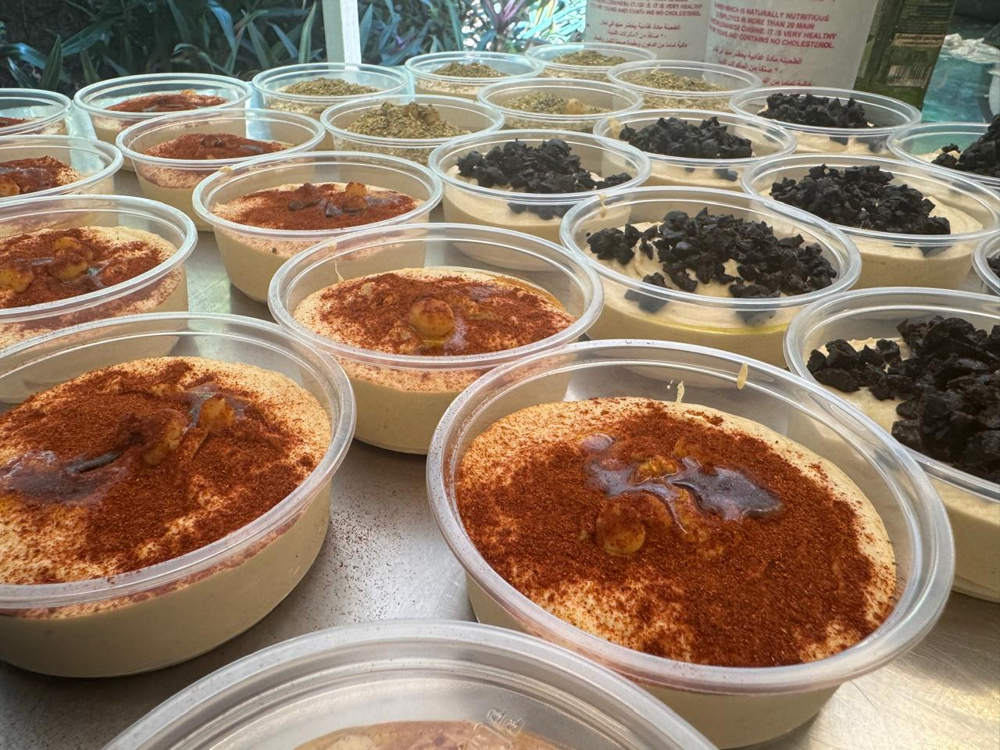
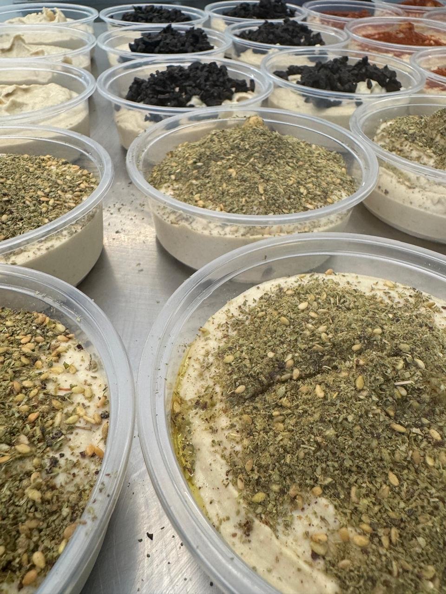
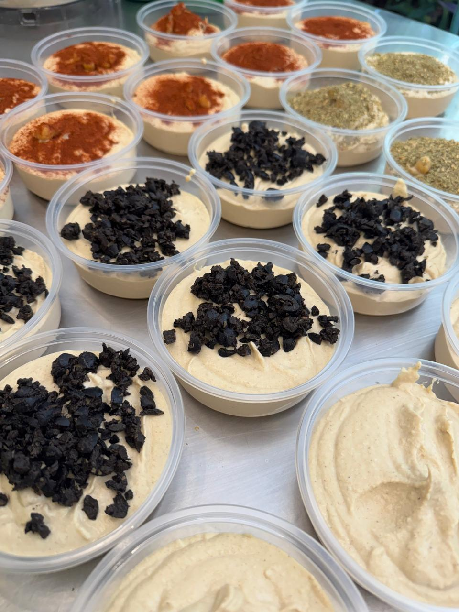

¿Fiesta en casa?
Usa el hummus como dip para nachos, chips de yuca, batata o papas.
¡Es irresistible!

Como aderezo!
Dilúyelo ligeramente con un poco de agua y limón para convertirlo en un aderezo perfecto para ensaladas.

Perfecto para descomprimir
Unta tu hummus favorito sobre tostadas de pan integral, galletas saladas o pan pita caliente para un snack rápido y delicioso